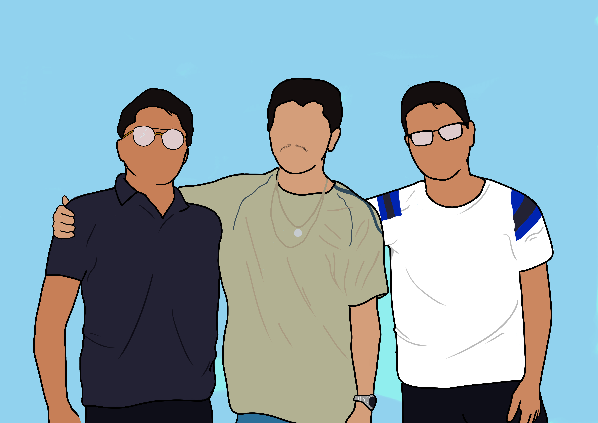
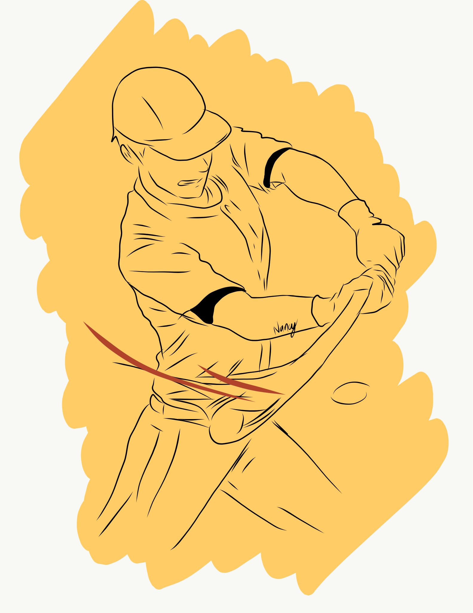

ILUSTRACIONES:
Ima

A base de una fotografía a color, fue diseñada la Ilustracion a peticion de un compañero, utilizando la escala de grises y con ayuda de la teoria de color.
Software utilizado: Clip Studio Paint
Familia
Este dibujo fue a base de un pedido, fue creacion de un ser querido fallecido junto a sus dos hijos; la ilustracion como tal se baso en fotografias.
Software utilizado: Clip Studio Paint
Beisbolista
Fue uno de mis primeros dibujos utilizando el software de Clip, es a base de lineas y de fondo un color amarillo para resaltar al beisbolista.